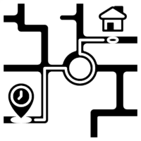

Convert Addresses to Lat/Long
Uses Google Maps API to
convert addresses to lat/long.
Stores result in .csv data file.
API rate limit, expect to wait.
{{CONVERT_ADDRESSES_STATUS}}
Fuzz Employee Lat/Long
A privacy measure.
Adds random variability to
lat/long to help mask real
addresses in publication.
{{FUZZ_GPS_STATUS}}
Generate Commute Data
Uses Google Map API
to calculate morning/evening
commutes, to support all else.
API rate limit, expect to wait.
{{GENERATE_COMMUTE_STATUS}}
Update Derivative Data
Re-runs the cost and emissions
calculations without rerunning
Google calls. Used if
parameters change.
{{UPDATE_COMMUTE_CALCUATIONS_STATUS}}